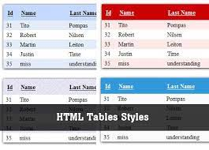

Para empezar a utilizar estilos de tablas HTML, necesariamente debimos estudiar la estructura de tablas HTML, sin embargo repasamos rápidamente; la etiqueta para tablas es < table > dentro de ella van las filas mediante la etiqueta < tr >, finalmente dentro de las filas van las columnas mediante < td >, sabiendo esto, ya podemos ir dando estilos.
Existen varias propiedades CSS aplicables a tablas, por ejemplo los márgenes, bordes, rellenos, colores de letra, colores de fondo, etc. son aplicables a tablas y a estas alturas ya las hemos conocido. Ahora nos toca conocer aquellas que sirve para maquetar tablas en especial.
Recordemos que al definir un borde para tabla en HTML, estos bordes se muestran separados, cada elemento de tablas posee su propio borde. La propiedad border-collapse nos permite colapsar esos bordes separados en un solo borde o mantenerlos separados
La propiedad border-spacing nos permite establecer el espacio entre celdas adyacentes de una tabla y solo funciona cuando los bordes de celdas están separadas (border-collapse="separate;"), es similar a la propiedad de relleno que conocimos en lecciones anteriores, pero en este caso se trata de elementos de tabla. La propiedad border-spacing puede tomar cualquier valor numérico, con su respectiva unidad de medida.
